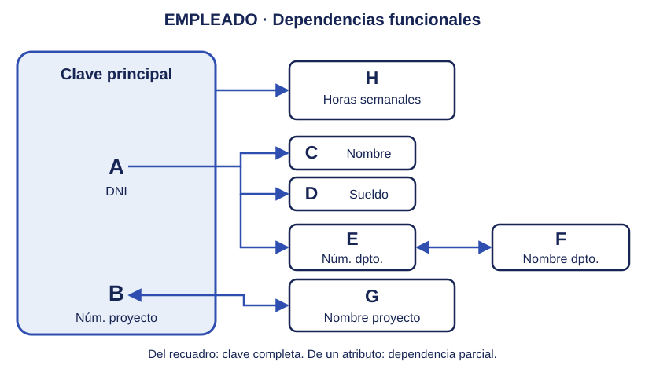
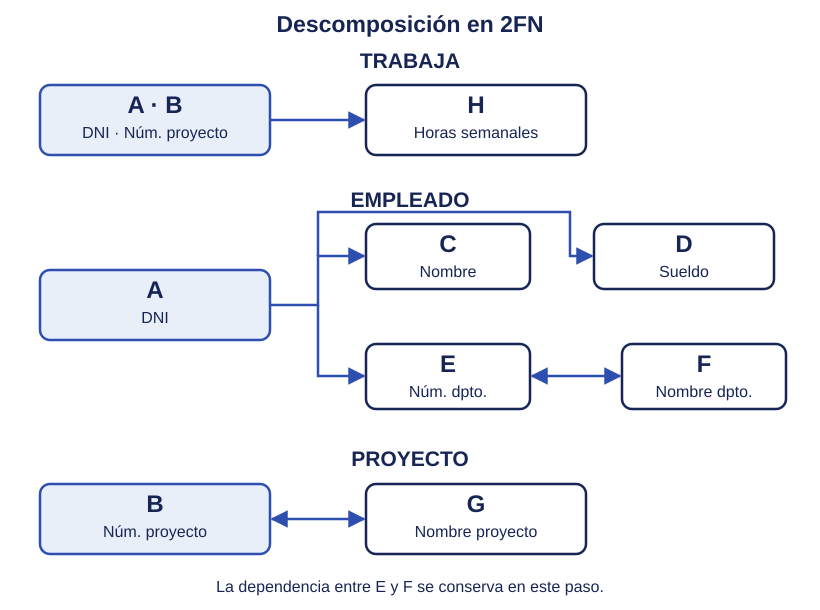
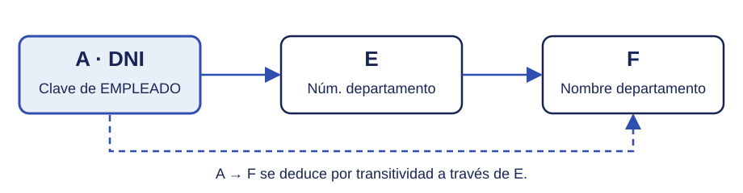
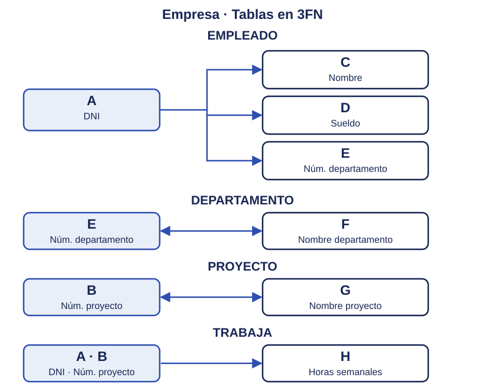

Ejemplo completo: normalización de la empresa
Seguimos el mismo caso de empleados, departamentos y proyectos de los temas de modelo E/R y modelo relacional. Partimos de una tabla que reúne los datos y la descomponemos paso a paso, manteniendo las letras A–H utilizadas en los apartados anteriores. Añadimos el atributo I = Teléfono para mostrar también el paso a 1FN. En esta ampliación, un empleado puede tener varios teléfonos, independientes de los proyectos en los que trabaja.
1. Tabla inicial y primera forma normal (1FN)
La tabla inicial EMPLEADO contiene una fila por cada participación de un empleado en un proyecto. El departamento indicado es el del empleado, que puede ser distinto del que controla el proyecto.
Antes de la 1FN
Guardamos inicialmente los teléfonos de cada empleado juntos en una celda:
| DNI | Núm. proyecto | Nombre empleado | Sueldo (€) | Núm. departamento | Nombre departamento | Nombre proyecto | Horas semanales | Teléfonos |
|---|---|---|---|---|---|---|---|---|
| 12345678A | 101 | Ana García López | 2400 | 10 | Informática | Portal web | 20 | 612345678, 698765432 |
| 12345678A | 102 | Ana García López | 2400 | 10 | Informática | App móvil | 15 | 612345678, 698765432 |
| 87654321B | 101 | Luis Pérez Ruiz | 2200 | 10 | Informática | Portal web | 30 | 623456789 |
| 11223344C | 102 | Marta Sánchez Gil | 2600 | 20 | Administración | App móvil | 10 | 634567890, 645678901 |
| 11223344C | 103 | Marta Sánchez Gil | 2600 | 20 | Administración | Gestión interna | 25 | 634567890, 645678901 |
| A | B | C | D | E | F | G | H | I |
Esta tabla no está en 1FN: Teléfonos contiene una lista de valores en algunas celdas. Por ejemplo, Ana tiene dos teléfonos.
Aplicar la 1FN
Separamos los teléfonos en TELEFONO_EMPLEADO (dni, telefono), con una fila por cada teléfono de un empleado. Su clave principal es (dni, telefono): el DNI por sí solo no identifica una fila, porque un empleado puede tener varios teléfonos. No suponemos que un teléfono pertenezca a un único empleado.
TELEFONO_EMPLEADO
| DNI (A) | Teléfono (I) |
|---|---|
| 12345678A | 612345678 |
| 12345678A | 698765432 |
| 87654321B | 623456789 |
| 11223344C | 634567890 |
| 11223344C | 645678901 |
Cada teléfono se guarda una sola vez por empleado, sin repetirlo por cada proyecto. En la tabla de participaciones quedan los ocho atributos originales:
EMPLEADO en 1FN
| DNI | Núm. proyecto | Nombre empleado | Sueldo (€) | Núm. departamento | Nombre departamento | Nombre proyecto | Horas semanales |
|---|---|---|---|---|---|---|---|
| 12345678A | 101 | Ana García López | 2400 | 10 | Informática | Portal web | 20 |
| 12345678A | 102 | Ana García López | 2400 | 10 | Informática | App móvil | 15 |
| 87654321B | 101 | Luis Pérez Ruiz | 2200 | 10 | Informática | Portal web | 30 |
| 11223344C | 102 | Marta Sánchez Gil | 2600 | 20 | Administración | App móvil | 10 |
| 11223344C | 103 | Marta Sánchez Gil | 2600 | 20 | Administración | Gestión interna | 25 |
| A | B | C | D | E | F | G | H |
Los atributos son A = DNI, B = Núm. proyecto, C = Nombre empleado, D = Sueldo, E = Núm. departamento, F = Nombre departamento, G = Nombre proyecto y H = Horas semanales.
Elegimos A . B como clave principal: un empleado puede trabajar en varios proyectos y un proyecto puede tener varios empleados. Ahora ambas tablas están en 1FN, porque cada celda contiene un único valor y no hay grupos repetidos de columnas.
2. Dependencias funcionales y grafo asociado
Analizamos las dependencias de los atributos A–H de EMPLEADO. TELEFONO_EMPLEADO se conserva por separado durante los pasos siguientes; con las reglas indicadas, ya está en FNBC. Los grafos siguientes muestran la normalización de la tabla de participaciones.
Las reglas de la empresa establecen estas dependencias:
- A . B → H: las horas semanales dependen del empleado y del proyecto juntos.
- A → C | D | E: el DNI determina el nombre, sueldo y departamento del empleado.
- E ↔ F: el número y el nombre del departamento se determinan mutuamente, porque ambos son únicos.
- B ↔ G: el número y el nombre del proyecto se determinan mutuamente, porque ambos son únicos.
También se deduce A → F, a través de A → E → F. Como G identifica al proyecto, A . G es otra clave candidata de la tabla inicial.

3. Segunda forma normal (2FN)
La tabla inicial no está en 2FN. C, D y E dependen solo de A; F también depende de A por transitividad. G depende solo de B. Son dependencias parciales respecto a la clave compuesta A . B. Solo las horas H necesitan la clave completa.
Separamos los atributos según su determinante:
| Tabla | Atributos | Clave principal |
|---|---|---|
| TRABAJA | A, B, H | A . B |
| EMPLEADO | A, C, D, E, F | A |
| PROYECTO | B, G | B |
| TELEFONO_EMPLEADO | A, I | A . I |

Ahora el sueldo y el nombre de un empleado se guardan una sola vez por DNI, y el nombre de un proyecto una sola vez por número de proyecto. Todavía conservamos el nombre del departamento en EMPLEADO: la 2FN permite la dependencia transitiva A → E → F.
4. Tercera forma normal (3FN)
TRABAJA y PROYECTO ya están en 3FN. EMPLEADO aún no la cumple, porque el nombre del departamento depende del DNI a través de su número:
A → E → F: DNI → Núm. departamento → Nombre departamento

Descomponemos EMPLEADO (A, C, D, E, F) en:
- EMPLEADO (A, C, D, E): conserva los datos del empleado y el número de su departamento.
- DEPARTAMENTO (E, F): guarda el número y el nombre de cada departamento una sola vez.
E queda en EMPLEADO como clave externa. Si el departamento 10 cambia de nombre, solo tendremos que modificar una fila de DEPARTAMENTO.

5. Solución: modelo relacional y datos
Modelo relacional final
- EMPLEADO (dni, nombre, sueldo, num-d)
- PK: dni
- FK: num-d → DEPARTAMENTO(num-d)
- DEPARTAMENTO (num-d, nombre-d)
- PK: num-d
- Clave candidata alternativa: nombre-d (único).
- PROYECTO (num-p, nombre-p)
- PK: num-p
- Clave candidata alternativa: nombre-p (único).
- TELEFONO_EMPLEADO (dni, telefono)
- PK: (dni, telefono)
- FK: dni → EMPLEADO(dni)
- TRABAJA (dni, num-p, horas)
- PK: (dni, num-p)
- FK: dni → EMPLEADO(dni)
- FK: num-p → PROYECTO(num-p)
EMPLEADO
| DNI (A) | Nombre (C) | Sueldo (D) | Núm. departamento (E) |
|---|---|---|---|
| 12345678A | Ana García López | 2400 | 10 |
| 87654321B | Luis Pérez Ruiz | 2200 | 10 |
| 11223344C | Marta Sánchez Gil | 2600 | 20 |
DEPARTAMENTO
| Núm. departamento (E) | Nombre departamento (F) |
|---|---|
| 10 | Informática |
| 20 | Administración |
PROYECTO
| Núm. proyecto (B) | Nombre proyecto (G) |
|---|---|
| 101 | Portal web |
| 102 | App móvil |
| 103 | Gestión interna |
TRABAJA
| DNI (A) | Núm. proyecto (B) | Horas semanales (H) |
|---|---|---|
| 12345678A | 101 | 20 |
| 12345678A | 102 | 15 |
| 87654321B | 101 | 30 |
| 11223344C | 102 | 10 |
| 11223344C | 103 | 25 |
TELEFONO_EMPLEADO
| DNI (A) | Teléfono (I) |
|---|---|
| 12345678A | 612345678 |
| 12345678A | 698765432 |
| 87654321B | 623456789 |
| 11223344C | 634567890 |
| 11223344C | 645678901 |
Podemos recuperar los ocho atributos A–H uniendo EMPLEADO con DEPARTAMENTO por num-d, con TRABAJA por dni y con PROYECTO por num-p. Los teléfonos se consultan en TELEFONO_EMPLEADO por dni. La descomposición conserva la información y las dependencias del ejemplo.
6. Comprobación de FNBC
Las cinco tablas también están en FNBC: en todas sus dependencias funcionales no triviales, el determinante es una superclave. En EMPLEADO es el DNI; en TRABAJA, la pareja DNI y número de proyecto. En DEPARTAMENTO y PROYECTO, tanto el número como el nombre son claves candidatas según las reglas de la empresa.
En TELEFONO_EMPLEADO no hay dependencias funcionales no triviales con un determinante que no sea superclave: su clave es la pareja DNI y teléfono.
No necesitamos descomponer más las tablas. En este ejemplo, al alcanzar la 3FN hemos alcanzado también la FNBC.